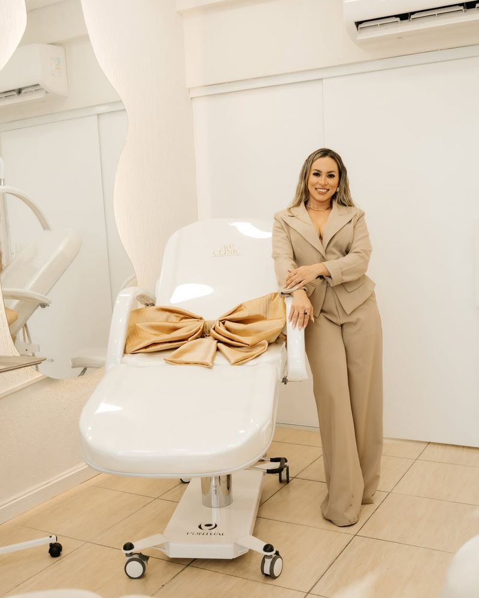

Toxina botulínica
Aplicação para suavizar linhas de expressão. Áreas e quantidade são definidas na avaliação.
Mais detalhes na avaliaçãoOs tratamentos oferecidos nas duas unidades, organizados por área. Em todos eles, a indicação, a quantidade de sessões e os cuidados são definidos na avaliação individual.
Alguns procedimentos são realizados em uma unidade específica ou em datas programadas. Confirme pelo WhatsApp da unidade escolhida.

Procedimentos faciais realizados com técnica e planejamento, buscando resultados naturais.
Aplicação para suavizar linhas de expressão. Áreas e quantidade são definidas na avaliação.
Mais detalhes na avaliaçãoUsado para contorno e volume em regiões como lábios, mandíbula e queixo, conforme a avaliação.
Mais detalhes na avaliaçãoEstimula a produção de colágeno para melhorar a firmeza da pele. Pode ser associado a outras tecnologias.
Mais detalhes na avaliaçãoPlanejamento que pode combinar diferentes procedimentos para o rosto, sempre a partir da avaliação.
Mais detalhes na avaliaçãoTecnologias e protocolos para contorno, gordura localizada, firmeza e textura da pele.

Tecnologia não invasiva para gordura localizada, com equipamentos Axcel de placas e de sucção.
Saiba maisUltrassom micro e macrofocado para firmeza e contorno do rosto e do corpo.
Saiba maisPlanejamento individual para contorno e firmeza, respeitando a anatomia de cada pessoa.
Mais detalhes na avaliaçãoCombinações definidas na avaliação, que podem incluir criofrequência e outras tecnologias.
Mais detalhes na avaliaçãoPrograma com acompanhamento ao longo das etapas. Detalhes e indicação são apresentados na avaliação.
Mais detalhes na avaliaçãoCuidados para textura, viço, manchas e praticidade no dia a dia.
Laser usado para textura, poros, manchas e viço da pele, inclusive no protocolo conhecido como BB Glow.
Saiba maisHigienização profunda da pele, que pode incluir LEDterapia.
Mais detalhes na avaliaçãoRedução dos pelos com laser, em sessões definidas na avaliação.
Mais detalhes na avaliaçãoCuidados para o couro cabeludo e os fios, com protocolos que podem incluir o laser Lavieen.
Mais detalhes na avaliaçãoProcedimento para a pele do rosto. Indicação e detalhes na avaliação.
Mais detalhes na avaliaçãoA avaliação é o primeiro passo para qualquer procedimento, nas duas unidades.